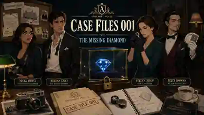

What happened
At 9:06 PM, gem appraiser Evelyn Shaw looks through the display glass and says the stone is not the Blue Meridian. A later inspection confirms the stone in the case is a cubic zirconia substitute.
Your job: identify who stole the real diamond, when the switch happened, and how.
The apparent impossibility
The study was placed under continuous hallway-camera watch at 8:45 PM. From then until the discovery, nobody entered or left the room. The display lock shows no forced entry.
Rules of the case
Every fact needed to solve the case can be found in the game. People may lie for reasons unrelated to the diamond, and suspicious evidence may have an innocent explanation.
Detective standard
Collect the facts, compare the suspects, and decide which evidence matters. The game will not tell you whether your theory is correct until you make an accusation.
The Study
Inspect the marked areas. Some evidence becomes available through interviews.
Evidence Locker
Evidence is recorded as found. Its significance is for you to decide.
Reconstructed Timeline
Only verified events appear here.
Case Theory
Pin the evidence you believe best supports your accusation. Nothing here is graded before you submit your final theory.